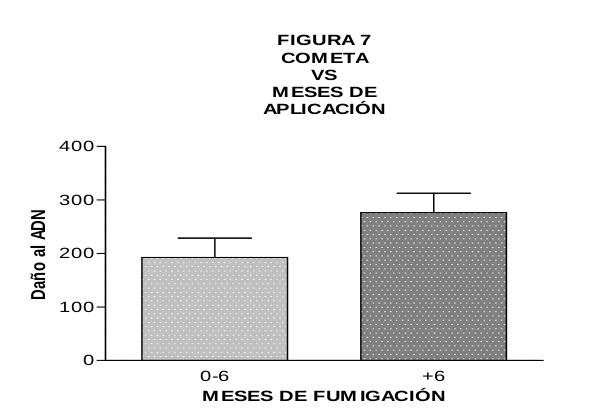

Genética y Mutagénesis Ambiental

Universidad Nacional de Río Cuarto
www.reapueblosrurales.exa.unrc.edu.ar
Ignacio Origlia Licencia de producción de pares 


Genotoxicidad
La toxicidad genética o genotoxicidad es el proceso por el cual un agente produce un efecto deletéreo sobre el ADN y otros blancos celulares que controlan la integridad del material genético.
Se denominan genotóxicos a aquellos agentes que producen alteraciones estructurales en el material hereditario, causando cambios o rearreglos en el mismo, e induciendo por tanto mutaciones.
Por qué estudiar la Genotoxicidad
La acumulación de mutaciones en las células de mamíferos está relacionada con la aparición de procesos neoplásicos (cáncer).
Además, si estas mutaciones se producen durante el embarazo en las células del embrión o feto en desarrollo, pueden llevar a la inducción de malformaciones o incluso abortos. Si las mutaciones se producen sobre óvulos o espermatozoides pueden llevar a alteraciones reproductivas como infertilidad o una mayor incidencia de enfermedades hereditarias.

Como estudiamos la Genotoxicidad
Ensayos de corto plazo (ECP) para la detección de mutágenos y carcinógenos
Aberraciones cromosómicas (AC): Alteraciones producidas a nivel de los cromosomas, tanto en estructura (daño en cromosomas o cromátidas) como en número (aneuploidías).

Micronúcleos (MN): ensayo que tiene en cuenta factores como la absorción, distribución, metabolismo y excreción (cinética) del compuesto analizado y/o sus metabolitos y la posible reparación de las lesiones. Sirve para detectar daño a nivel de los cromosomas o del aparato mitótico.

Ensayo de Cometa o electroforesis en gel de células individuales: detecta rupturas en las cadenas de ADN. Es uno de los ensayos de mayor sensibilidad, y tiene la ventaja de que puede ser virtualmente realizado en cualquier tipo de célula eucariota sin la necesidad de realizar cultivos

Cada uno de estos ensayos proporciona cierta información, que resulta concluyente cuando es analizada de forma integrada como parte de una batería de ensayos
El monitoreo de las potenciales propiedades genotóxicas de un compuesto, así como el biomonitoreo de poblaciones animales o humanas expuestas a sus posibles efectos es una herramienta útil para estimar el riesgo de genotoxicidad derivado de la exposición a un químico o complejo de químicos determinado
Aportes al conocimiento
Algo de info breve del GeMA, historia, orígen
Genotoxicidad de AMPA, el metabolito ambiental del glifosato, evaluado por el ensayo Cometa y pruebas citogenéticas
Autores: F. Mañas a, L. Peralta a, J. Raviolo b, H. Garcı́a Ovando c, A. Weyers a, L. Ugnia a, M. Gonzalez Cid d, I. Larripa d, N. Gorla a
a: Laboratorio de Salud Pública, Facultad de Agronomı́a y Veterinaria (FAV), Universidad Nacional de Rı́o Cuarto (UNRC)
b: Departamento de Patologı́a, FAV, Universidad Nacional de Rı́o Cuarto (UNRC)
c: Departamento de Clı́nica Animal, FAV, Universidad Nacional de Rı́o Cuarto (UNRC)
d small> d: Depto. de Genética, Academia Nacional de Medicina, Buenos Aires, Argentina
Año: 2009
Objetivos
El ácido (aminometil) fosfórico (AMPA) es el principal producto de descomposición del glifosato. Presenta mayor persistencia ambiental que el glifosato, y puede presentar un riesgo de contaminación del agua subterránea.
El propósito de este estudio es contribuir a la evaluación del potencial genotóxico de AMPA, que solo ha sido informado por las agencias reguladoras en informes no publicados mencionados en las revisiones.
Introducción
Se realizaron una serie de experimentos para evaluar el AMPA
- Ensayo cometa en células de la línea celular Hep-2 (estudio in vitro)
- Aberraciones cromosómicas en linfocitos humanos (estudio in vitro)
- Test de Micronúcleos en Ratones Balb-C (estudios in vivo)
Métodos y Resultados
Ensayo Cometa: Después de 4hs de exposición a distintas concentraciones de AMPA (2.5, 4.5, 5.5, 6.5, 7.5 mM) a células de la línea celular Hep-2 se evaluaron 3 parámetros:
- Momento de la cola (Comet TL)
- Porcentaje de ADN en la cola (% DNA)
- Longitud de la cola (TM
Encontrando diferencias significativas en 14 de los 15 tratamientos con AMPA con p<0.05 (se utiliza Mitomicina C como control positivo)
Fig 1 (debajo)

Aberraciones Cromosómicas: Se obtuvieron muestras de sangre humana de seis donantes sanos, 3 mujeres y 3 hombres, de 18 a 33 años. Los donantes no tenían antecedentes de exposición a pesticidas y no eran fumadores.
Los cultivos fueron expuestos a AMPA a concentraciones de 0.9 y 1.8 mM durante las últimas 48 h de cultivo. El AMPA se disolvió previamente en 1 ml de medio de cultivo y se ajustó a pH 7,2–7,4. Se utilizó mitomicina C (0,9 m M) como un inductor de Aberraciones Cromosómicas (A.C.) conocido.
Se evaluaron A.C considerando roturas de cromátidas y Gaps, roturas de cromosomas y Gaps, cromosomas dicéntricos, fragmentos excéntricos y células endorreduplicadas. Se examinaron 2000 por tratamiento para el índice mitótico (IM), calculado como el número de células en división /2000 células
Se encontraron diferencias significativas para el tratamiento de AMPA 1.8mM en A.C con y sin Gaps
Tabla 1 (debajo)
Tabla 1: Aberraciones cromosómicas en linfocitos humanos tratados con AMPA
| Tratamiento | A. C. en 100 metafases | A. C. - Gaps en 100 metafases | Indice Mitótico |
|---|---|---|---|
| Control | 4.4 +/- 1.4 | 2.2 +/- 0.7 | 7.0 +/- 3.2 |
| Mitomicina (0.9 m M) | 71.5 +/- 30.2 * | 68.5 +/- 61.5 * | 3.5 +/- 2.1 |
| AMPA (0.9 mM) | 6.2 +/- 1.3 | 3.4 +/- 0.9 | 5.8 +/- 3.6 |
| AMPA (1.8 mM) | 9.5 +/- 1.1 * | 5.0 +/- 0.9* | 9.7 +/- 4.8 |
Los datos de cada tratamiento se expresan como media +/- media de error estándar (SEM).
* indica diferencias significativa con P<0.05
Micronúcleos (MN): Ratones Balb-C machos y hembras de 8 a 12 semanas de edad se mantuvieron con dieta de roedores y agua a voluntad. Se emplearon grupos con cinco animales en cada uno para esta prueba
Los grupos recibieron inyecciones de 100 y 200 mg/kg de AMPA. Todas las dosis se repitieron después de 24h. El grupo de control positivo recibió una inyección de ciclofosfamida de 20 mg/kg y el grupo de control negativo un volumen equivalente de solución salina.
Todos los animales fueron sacrificados 24 h después de la segunda administración y se prepararon frotis de médula ósea a partir de los huesos femorales y se analizaron 1000 eritrocitos por animal.
Se encontraron diferencias significativas para los 2 tratamientos con AMPA y el control positvo para el Test de MN
Tabla 2 (debajo)
Tabla 2: Número de eritrocitos micronucleados (EMN)/1000 células analizadas
| Tratamiento | EMN/1000 celulas |
|---|---|
| Control (solución salina) | 3.8 +/- 1.8 |
| ciclofosfamida (20 mg/kg) | 19.2 +/- 3.9** |
| AMPA 200 (2x100 mg/kg) | 10.0 +/- 1.9** |
| AMPA 400 (2x200 mg/kg) | 10.4 +/- 3.3** |
Los datos de cada tratamiento se expresan como media +/- media de error estándar.
** indica diferencias significativa con P<0.01
Conclusiones
Los efectos observados en el ensayo Cometa con células expuestas a AMPA se confirman por la prueba in vitro de aberraciones cromosómicas y prueba in vivo de micronúcleos.
Los resultados obtenidos son importantes porque algunas agencias reguladoras han determinado que AMPA no es una preocupación toxicológica y no lo incluye en las evaluaciones de riesgos; sin embargo, se sabe relativamente poco acerca de la actividad biológica de este compuesto, que se puede encontrar como contaminante en el medio ambiente.
Bibliografía
- Battaglin, W., Kolpin, D., Scribner, E., Kuivila, K., Sandstrom, M., 2005. Glyphosate, other herbicides, and transformation products in Midwestern streams. J. Am.Water Resour. Assoc. 41, 323–332.
- Landry, D., Dousset, S., Fournier, J., Andreux, F., 2005. Leaching of glyphosate and AMPA under two soil management practices in Burgundy vineyards. Environ.Pollut. 138, 191–200.
- US EPA, 1993. Environmental Protection Agency. Re-registration Eligibility Decision (RED): Glyphosate. US Environmental Protection Agency, Office of Prevention, Pesticides and Toxic Substances, Washington, DC.
Genotoxicidad del glifosato evaluada mediante el ensayo cometa y pruebas citogenéticas
Autores: Fernando Mañas a c, Laura Peralta a, Jose Raviolo a, Hugo Garcı́a Ovando a, Alicia Weyers a, Laura. Ugnia a, María Gonzalez Cid b, Irene Larripa b, Nora Gorla a, c
a: Facultad de Agronomı́a y Veterinaria (FAV), Universidad Nacional de Rı́o Cuarto (UNRC)
b: Departamento de Genética, Academia Nacional de Medicina, Ciudad Autónoma de Buenos Aires, Argentina
c: CONICET, Argentina
Año: 2009
Introducción
El Glifosato es el principio activo de un herbicida de amplio espectro, no selectivo y de acción sistémica, utilizado para el control de malezas en ambientes agrícolas, forestales y paisajísticos.
Actúa inhibiendo la actividad de una enzima presente en las plantas, llamada EPSPS (5-enolpiruvilshikimato-3-fosfato-sintetasa), que participa en la síntesis de compuestos esenciales para la vida de las mismas, incluyendo los aminoácidos Fenilalanina, Triptófano y Tirosina
Es combinado con isopropilamina, para dar lugar a la formación de una sal más soluble. Esta sal, disuelta en agua, se combina además con un surfactante que aumenta su eficiencia a campo. El surfactante más comúnmente empleado en todo el mundo, es la polioxietilenamina (POEA), mejora aún más la solubilidad y colabora en la difusión del mismo a través de la superficie de la planta
Varias agencias reguladoras han realizado revisiones sobre la seguridad del glifosato y el herbicida Roundup y han concluido que no hay indicios de ningún problema de salud humana.
Sin embargo, los aspectos más controversiales del Glifosato, están relacionados con la toxicidad crónica, es decir, aquellos efectos que se producen por la exposición prolongada a bajas cantidades o concentraciones de una sustancia química; y que pueden ser acumulativos, produciendo enfermedades que se manifiestan en el mediano o largo plazo; como el desarrollo de neoplasias (cáncer) entre otros.
Objetivos
El propósito de este estudio fue proporcionar conocimiento para aclarar los datos contradictorios sobre los efectos genotóxicos in vitro e in vivo sobre el glifosato.
Metodología
Se realizaron una serie de experimentos para evaluar el Glifosato
- Ensayo cometa en células de la línea celular Hep-2 (estudio in vitro)
- Aberraciones cromosómicas en linfocitos humanos (estudio in vitro)
- Test de Micronúcleos en Ratones Balb-C (estudios in vivo)
Resultados
Ensayo Cometa: Después de 4hs de exposición a células de la línea celular Hep-2 mantenidas en medio de cultivo EMEM a distintas concentraciones de Glifosato (3, 4.5, 6, 7.5, 9, 12. y 15 mM) se evaluaron 3 parámetros
El glifosato exhibió un efecto genotóxico dependiente de la dosis en los tres parámetros analizados, Encontrando diferencias significativas en todos los tratamientos con p<0.05
Tabla 1 (debajo)
Tabla 1: Nivel de daño del ADN detectado en las células Hep-2 expuestas a diferentes concentraciones de glifosato utilizando el ensayo del cometa
| Tratamiento | Intensidad media de la cola, media ± ESM | Longitud de la cola, media ± ESM | Momento de la cola, media ± ESM |
|---|---|---|---|
| Control (Medio de Cultivo) | 3.95 ± 0.53 | 6.07 ± 1.05 | 5.42 ± 1.83 |
| Mitomycina C 0.01 mM | 51.80 ± 5.48** | 117.10 ± 7.47** | 292.30 ± 35.10** |
| Glifosato 3.00 mM | 68.73 +/- 6.70** | 183.60 +/- 12.26** | 624.90 +/- 70.22** |
| Glifosato 4.5 mM | 109.60 +/- 11.09** | 217.50 +/- 13.24** | 803.60 +/- 75.02** |
| Glifosato 6 mM | 127.90 +/- 13.54** | 220.30 +/- 21.16** | 740.70 +/- 95.44** |
| Glifosato 7.5 mM | 109.30 +/- 12.71** | 223.40 +/- 12.80** | 963.20 +/- 88.01** |
Datos como Media +/- Error estandar de la media (ESM) ** indica diferencias significativa con P<0.01
Aberraciones Cromosómicas: Se obtuvieron muestras de sangre humana de seis donantes sanos, 3 mujeres y 3 hombres, de 18 a 33 años. Los donantes no tenían antecedentes de exposición a pesticidas y no eran fumadores.
Los cultivos fueron expuestos a glifosato a concentraciones de 0.20, 1.20 o 6.00 mM durante las últimas 48 h de cultivo. El herbicida se disolvió previamente en 1 ml de medio de cultivo y se ajustó a pH 7,2–7,4. Se utilizó mitomicina C (0,9 m M) como un inductor de Aberraciones Cromosómicas (A.C.) conocido.
Se evaluaron A.C considerando roturas de cromátidas y Gaps, roturas de cromosomas y Gaps, cromosomas dicéntricos, fragmentos excéntricos y células endorreduplicadas. También se examinaron 2000 por tratamiento para el índice mitótico (IM), calculado como el número de células en división /2000 células
No se encontraron diferencias significativas para este ensayo
Micronúcleos (MN): Ratones Balb-C machos y hembras de 8 a 12 semanas de edad se mantuvieron con dieta de roedores y agua a voluntad. Se emplearon grupos con cinco animales en cada uno para esta prueba
Los grupos recibieron inyecciones de 50, 100 y 200 mg/kg de glifosato. Todas las dosis se repitieron después de 24h. El grupo de control positivo recibió una inyección de ciclofosfamida de 20 mg/kg y el grupo de control negativo un volumen equivalente de solución salina.
Todos los animales fueron sacrificados 24 h después de la segunda administración y se prepararon frotis de médula ósea a partir de los huesos femorales y se analizaron 1000 eritrocitos por animal.
Se encontraron diferencias significativas para el tratamientos de 200 mg/kg de glifosato para el Test de MN. No hubo signos clínicos para informar.
Tabla 2 (debajo)
Tabla 2: Número de eritrocitos micronucleados (EMN)/1000 células analizadas en la médula ósea de ratones después del tratamiento con ip de glifosato.
| Tratamiento | EMN/1000 celulas |
|---|---|
| Control (solución salina) | 3.8 +/- 0.8 |
| ciclofosfamida (20 mg/kg) | 19.2 +/- 3.9** |
| Glifosato 100 (2x50 mg/kg) | 3.7 +/- 0.5 |
| Glifosato 200 (2x100 mg/kg) | 4.2 +/- 0.5 |
| Glifosato 400 (2x200 mg/kg) | 13.0 +/- 3.5** |
Los datos de cada tratamiento se expresan como media +/- media de error estándar.
** indica diferencias significativa con P<0.01
Conclusiones
En la batería de pruebas empleadas en el presente estudio, el glifosato fue genotóxico en el ensayo del cometa en células Hep-2 y en la prueba de MNT a 400 mg / kg en ratones.
Estos ensayos se llevan a cabo generalmente tras una sola administración, o por exposiciones de muy corto tiempo, las dosis elevadas buscan poner en evidencia el potencial genotóxico de un compuesto al que los seres humanos podemos vernos expuestos por períodos prolongados.
En síntesis, el Glifosato es una molécula que podría producir diversas alteraciones en la salud humana. Uno de los efectos que podría derivar de la exposición a Glifosato, aún a bajas dosis, es lo que se conoce como teratogénesis; es decir, la capacidad de inducir malformaciones tras la exposición durante el período de gestación.
La importancia de esta información radica en que con el uso presente y posiblemente futuro de Glifosato, seguirá apareciendo como contaminante e ingresando a nuestro organismo por diferentes vías, poniendo en riesgo nuestra salud y la de futuras generaciones.
Bibliografía
- Williams, G.; Kroes,R.; Munro, I. 2000. Safety Evaluation and Risk Assessment of the Herbicide Roundup and Its Active Ingredient, Glyphosate, for Humans. Reg Tox Pharm [En línea]. 2000. vol. 31: 117-165.
- Benedetti, A.; Vituri, C.; Trentin, A.; Domingues, A.; Silva, M. 2004. The effects of subchronic exposure of Wistar rats to the herbicide Glyphosate-Biocarb. Tox. Let. 153: 227-232.
- Durán Merás, I.; Galeano Díaz, T.; Alexandre Franco, M. 2005.Simultaneous fluorimetric determination of glyphosate and its metabolite, aminomethylphosphonic acid, in water, previous derivatization with NBD-Cl and by partial least squares calibration (PLS). Talanta. [En línea] 2005. vol. 65: 7–14.
- Isenring, R., 2004. Glyphosate. Pesticides News 64, 20–21.
- Monroy, M., Cortés, A., Sicard, D., Groot de Restrepo, H., 2005. Citotoxicidad y genotoxicidad en células humanas expuestas in vitro a Glifosato. Biomédica 25, 335–345.
- EPA, 1993. Re-registration Eligibility Decision (RED): Glyphosate. U.S. Environmental Protection Agency, Office of Prevention, Pesticides and Toxic Substances, Washington.
Acceso a la publicación completa:Descarga Aquí
Informe de Fernando Mañas sobre los Efectos del Glifosato sobre la salud: Descarga Aquí
Aberraciones Cromosómicas en Trabajadores Rurales de la Provincia de Córdoba Expuestos a Plaguicidas
Autores: Fernando Mañas a c, Laura Peralta a, Nora Gorla a c, Beatriz Bosh c, Delia Aiassa c.
a: Facultad de Agronomı́a y Veterinaria (FAV), Universidad Nacional de Rı́o Cuarto (UNRC)
b: CONICET, Argentina
c: Departamento de Ciencias Naturales, Facultad de Ciencias Exactas, Físico, Químicas y Naturales, UNRC.
Año: 2009
INTRODUCCIÓN
El monitoreo de una población humana expuesta a agentes potencialmente dañinos es una herramienta valiosa en salud pública y ocupacional.
Los ensayos citogenéticos de aberraciones cromosómicas (AC) clásicos o el uso de la citogenética molecular para identifi car el origen cromosómico de los micronúcleos, son importantes marcadores de efecto temprano, que permiten detectar un nivel de daño que todavía es reversible y por lo tanto permiten jugar un rol en la prevención.
Objetivo
Realizar un monitoreo citogenético preliminar de trabajadores rurales de la Provincia de Córdoba expuestos a plaguicidas por la intensa actividad agrícola que desarrollan, determinada principalmente por plantaciones de soja; comparandolos con un grupo de referencia sin exposición laboral a sustancias agroquímica
Materiales y Métodos
Protocolo de trabajo aprobado por el Comité de Ética en Investigaciones Biomédicas- IMBICE, La Plata.
Después de obtener el consentimiento informado de los participantes y el cuestionario con datos personales y hábitos en la manipulación de plaguicidas, se tomó una muestra de sangre de 5 ml que ingresa al laboratorio con un código para hacer el ensayo de genotoxicidad de Aberraciones Cromosómicas en sangre periférica.
Se realiza el ensayo comparando un grupo laboralmente expuesto (14 aplicadores) con 12 donantes urbanos sin exposición.
Resultados
Se analizaron 100 metafases/persona registrando la cantidad AC por cada 100 células y analizando AC de tipo estructural y numérico.
- La edad promedio del grupo de personas expuestas a plaguicidas fue de 40,4±12,7 años y para el grupo de referencia 35,3±11,8 años.
- El tiempo de exposición laboral a plaguicidas varía entre 8 a 35 años
- La periodicidad de aplicación está comprendida entre 6 y 8 meses por año
- Los plaguicidas más utilizados son glifosato, cipermetrina y atrazina
- Las fumigaciones son realizadas con mochila y máquinas fumigadoras
- Las medidas de protección utilizadas son guantes y barbijos, y sólo en algunos momentos durante el proceso de fumigación
- Los fumigadores no usan indumentaria destinada específicamente a la tarea (ej: mamelucos, botas).
La cantidad de aberraciones cromosómicas AC/100 células y el porcentaje de células aberrantes con y sin gaps fue mayor en el grupo de expuestos con diferencia estadísticamente significativa (p < 0,05).
La proporción de células endoreduplicadas es significativamente mayor en el grupo de expuestos. Esto sugiere que está afectada la división celular lo cual, de no ser eliminada la célula aberrante, puede conducir a células con aberraciones cromosómicas numéricas (poliploides).
Tabla 1: Frecuencias de Aberraciones Cromosómicas en un grupo de trabajadores rurales fumigadores y el correspondiente grupo de referencia
| Parámetros | AC/100 cél incluyendo gaps | % de células aberrantes incluyendo gaps | AC/100 cél excluyendo gaps | % de células aberrantes excluyendo gaps |
|---|---|---|---|---|
| Grupo de Referencia | 5,25 ± 2,77 | 5,08 ± 2,71 | 2,58 ± 1,83 | 2,58 ± 1,83 |
| Grupo de Expuestos | 11,50* ± 4,33 | 11,21* ± 3,87 | 7,71* ± 3,45 | 7,50* ± 3,00 |
*diferencia significativa con el grupo de referencia (p < 0,05).
Conclusiones
La elevada frecuencia de roturas de cromátidas podría ser causada por el efecto de los residuos de sustancias genotóxicas acumuladas en las células. Este efecto dañino se expresa en forma de AC, que se producen cuando las células pasan por la fase de síntesis en su ciclo celular. Esto pone de manifiesto el riesgo que representa la exposición a plaguicidas para la salud de esta población.
Además, a nivel de grupo, una frecuencia aumentada de AC en sangre periférica está asociada con un riesgo general aumentado de cáncer.
Bibliografía
- OECD (1997). Test guideline 473. In Vitro Mammalian Chromosome Aberration Test. Organisation for Economic Cooperation and Development, París.
- Albertini, R.J., Anderson, D., Douglas, G.R., Hagmar, L., Hemminki, K., Merlo, F., Natarajan, AT., Norppa, H., Shuker, D.E., Tice, R., Waters, M.D., Aitio, A. (2000). IPCS guidelines for the monitoring of genotoxic effects of carcinogens in humans. Mutat. Res. 463:111-172.
- Hagmar, L., Bonassi, S., Stromberg, U., Brogger, A., Knudsen, L.E., Norppa, H., Reuterwall, C. (1988). The European Study Group on Cytogenetic Biomarkers and Health. Chromosomal aberrations in lymphocytes predict human cancer: A report from the European Study Group on Cytogenetic Biomarkers and Health (ESCH). Cancer Res. 58: 4117-4121.
- Bonassi, S., Ugolini, D., Kirsch-Volders, M., Strömberg, U., Vermeulen, R. y Tucker, J. (2005). Human population studies with cytogenetic biomarkers: Review of the literature and future prospectives. Environ. Mol. Mutagen. 45: 2-3, 258– 270.
Acceso a la publicación completa: Descarga Aquí
Encuestas y talleres educativos sobre plaguicidas en pobladores rurales de la comuna de Río de los Sauces, Córdoba.
Autores: Natalia Gentile 1 , Fernando Mañas 2, Laura Peralta 2, Beatriz Bosch 1, Nora Gorla 3 y Delia Aiassa 1
1: Facultad de Ciencias Exactas, Físico-Químicas y Naturales
2: Facultad de Agronomía y Veterinaria, Universidad Nacional de Río Cuarto (UNRC)
3: CONICET. UNRC, Ruta 8 Km 605
Año: 2010
Introducción
Los pobladores de áreas rurales son un segmento de la población vulnerable por estar en riesgo alto de exposición a plaguicidas por la cercanía de sus hogares a los lugares donde se fumiga.
El desarrollo de estrategias para intervenir y atenuar la exposición a plaguicidas, puede reducir potencialmente la incidencia de los efectos de los mismos sobre la salud ambiental y humana.
Los estudios relacionados con la percepción de riesgo son estrategias importantes para intervenir en los problemas relacionados.
El manejo inadecuado de plaguicidas constituye un serio problema para el ambiente en general y puede provocar daños irreversibles sobre la salud de las poblaciones animales y humanas. Por lo tanto abordar el problema de los efectos biológicos de los plaguicidas sobre poblaciones expuestas lleva implícito un deber en la concienciación sobre las medidas de prevención, protección y cuidado personal en el ámbito laboral.
Objetivo
Analizar el conocimiento sobre las características de los plaguicidas utilizados y la percepción del riesgo de su utilización de pobladores de una zona rural y presentar una estrategia de intervención para capacitarlos en aquellos aspectos que lo requieran.
Materiales y Métodos
Aŕea de estudio: Rio de los Sauces (32° 31' 57.66", 64° 34'58.39), zona de uso intensivo de plaguicidas, con los cultivos ubicados cerca de las residencias (50 metros en promedio)
Toda la familia está involucrada en el proceso de trabajo y vive rodeada por los cultivos por lo que la exposición a los plaguicidas es extremadamente alta y continua.
Se implementaron encuestas a 34 hogares (146 individuos) tomados al azar del área de estudio.
Resultados
Conocimiento sobre el producto utilizado y forma de contacto
- El 100% de los fumigadores conocen el producto que aplican pero desconocen el grupo y la clase toxicológica a la que pertenecen.
- Los plaguicidas más utilizados son insecticidas como la cipermetrina y herbicidas como el glifosato.
- El 90% de los encuestados que utilizan plaguicidas en el interior de su vivienda desconoce el principio activo. El 10% indica el uso de permetrina y cipermetrina.
- l 23% de los hogares utilizan plaguicidas en el interior de la vivienda, principalmente insecticidas
- En el 34% de los casos se fumiga alrededor de la vivienda.
- El 82% de los encuestados consideran de interés la temática de los plaguicidas siendo su principal preocupación: “los efectos en el medio ambiente”, “los efectos en la salud” y “la falta de información sobre el uso responsable” de los mismos.
Principales plaguicidas utilizados en la localidad en estudio (figura 1 debajo)
vías de entrada de los plaguicidas en el cuerpo (figura 2 debajo)
Percepción de riesgo para la salud
- Los plaguicidas son considerados peligrosos por el 100% de los encuestados.
- solo el 47% recibió algún tipo de información sobre los efectos que éstos producen, a través de folletos (52%), y conferencias o charlas (23%) y rótulos (23%).
- el 35% reportó conocer casos de intoxicación con plaguicidas, siendo en el 83% afectada la persona que lo aplica y 17% el que permanece en el lugar de aplicación.
- El 65% de los encuestados no conocen a ninguna persona que haya sufrido intoxicación por la exposición a plaguicidas
- el 65% de los hogares afirman saber dónde recurrir, respondiendo en el 48% de los casos hospitales, en un 33% centros de atención primaria y en un 18% clínicas privadas.
- En caso de intoxicación, el 48% de los encuestados se lava con abundante agua, el 40% se cambia la ropa, y el 12% toma leche, antes de recurrir al lugar seleccionado.
- Del total de mujeres analizadas, el 3% han presentado abortos, el 6% han tenido hijos muertos al nacer, y el 3% no han nacido a término, siendo generalmente sietemesinos.
síntomas más comunes que manifestaron los individuos intoxicados (figura 3 debajo)
Trabajadores rurales: tiempo de exposición, época del año, medidas de protección utilizada, percepción del riesgo
- Un 44% de los aplicadores trabaja con plaguicidas hace 1 a 10 años, el 33%, de 11 a 20 años, y un 22% hace mas de 20 años.
- El 90% de los trabajadores rurales aplican los plaguicidas en el periodo primavera-verano (octubre a marzo).
- En general, aplicaban plaguicidas en un promedio de 3 días por mes (3,33 ± 3,21) con un rango de 1 a 7 días, desde aproximadamente los 22 años (22,5 ± 4,12, rango 18 a 26).
Medidas de protección personal en el momento de aplicar los plaguicidas (figura 4 debajo)
Las conductas de riego más frecuentes respecto al destino de los elementos (figura 5 debajo)
Conocimiento sobre Legislación
El 100% desconoce la legislación sobre plaguicidas, y no han recibido la visita de funcionarios que deban hacer cumplir con leyes, decretos u otro instrumento legal.
Estrategias de intervención: Taller
El taller se coordinó al mes siguiente de realizada la encuesta, se estructuró en dos etapas. Una etapa de presentación y explicación de los siguientes contenidos:
- Los plaguicidas, tipos, clasificación, usos, efectos sobre la salud humana y el ambiente.
- Relación entre los plaguicidas y las enfermedades de la población.
- Prevención y promoción de salud. Aprendizajes que promuevan cambios de conducta frente a los agentes contaminantes.
- Biodiversidad, calidad ambiental, prácticas agrícolas
- Legislación sobre plaguicidas
Estos contenidos fueron seleccionados acordes con las inquietudes planteadas por las autoridades municipales, docentes y médicos del lugar y con las temáticas tratadas en las encuestas.
Si bien la mayoría de las personas referían conocer los daños a la salud que los plaguicidas producen en forma inmediata (toxicidad aguda); se desconocía en la mayoría de los casos que los plaguicidas son capaces de provocar enfermedades por la exposición prolongada (intoxicaciones crónicas).
Se desconocía que los plaguicidas pudieran causar daños en el material hereditario; y se sorprendian al exhibír los resultados hallados en los ensayos de genotoxicidad efectuados en otras localidades.
Por otro lado se planteó el diseño y elaboración de material educativo de divulgación y difusión (folletos)
Se seleccionan y jerarquizan aquellos contenidos obtenidos de los talleres y/o disertaciones de mayor relevancia para los participantes y luego se procedió a redactar el texto de una forma sencilla, evitando en todo momento el uso de términos técnicos, a través de un lenguaje coloquial que no cause dificultades en la lectura y que además resulte atractivo para quien lo lea.
Una vez finalizado el diseño del material, se imprimió y repartió en la localidad que participó del Taller. La entrega se efectuó a los docentes de escuelas de nivel primario y secundario para que fuera repartido en la población.
Discusión
las familias residentes en la localidad de Rio de los Sauces están expuestas a diversas tipos y mezclas de plaguicidas, siendo la mayoría de ellos clasificados por la OMS como moderadamente peligrosos (clase II).
Las mezclas son más tóxicas para el humano que la exposición a un solo plaguicida
Se observaron conductas de riesgo referidas a la utilización de plaguicidas en el ámbito rural, relacionadas con el destino final de los elementos empleados en la utilización de plaguicidas
Aunque los trabajadores perciben el potencial nocivo de los plaguicidas, ellos negaron la posibilidad de enfermarse manipulándolos durante sus propias actividades de trabajo.
La minimización del riesgo puede estar asociada con la carencia de conocimiento (80% de la información disponible para ellos proviene de la industria de los plaguicidas y del mercado local), lo que hace que estos trabajadores sean escépticos acerca de los efectos que puedan sufrir en su salud.
En general no hay una percepción acabada de los plaguicidas como contaminantes ambientales
Bibliografía
- Martínez Valenzuela, C. Y S. Gómez Arroyo. 2007. Riesgo genotóxico por exposición a plaguicidas en trabajadores Agrícolas. Revista Internacional de Contaminación Ambiental 23: 185-200.
Acceso a la publicación completa: Descarga Aquí
Los plaguicidas. Su relación con la salud humana y ambiental en la provincia de Córdoba
Autores: Delia Aiassa 1, Fernando Mañas 2, Beatriz Bosch 1, Laura Peralta 2, Natalia Gentile 1, Sergio Bevilacqua 3, Joaquín Gómez Miralles 3, Sandra Berrardo 1 y Nora Gorla 4
1: Departamento de Ciencias Naturales. FCEFQyN- Universidad Nacional de Río Cuarto (UNRC).
2: Departamento de Clínica Animal. FAV- UNRC.
3: Departamento de Ciencias Jurídicas. FCH- UNRC.
4: CONICET
Año: 2010
¿Cuál es la problemática de los plaguicidas en la provincia de Córdoba?
La expansión de la superficie agrícola de la provincia y el tipo de modelo productivo en marcha, han promovido un aumento de los volúmenes aplicados de distintos productos plaguicidas en los últimos años.
Sabemos que sólo un 0,1% de la cantidad aplicada de plaguicidas llega a la plaga, mientras que el restante circula por el ambiente
La exposición ocurre en distintos escenarios: domiciliario, sanitario y rural; la población rural resulta con alta exposición y gran vulnerabilidad y los conocimientos sobre la toxicidad crónica o de los efectos a largo plazo son muy limitados. No se encuentran reportes para la Provincia de Córdoba. En general, en las estadísticas es evidente el subregistro, sin reflejar la magnitud real del problema
¿Cómo detectar los efectos biológicos de los plaguicidas antes de que causen daño en la salud?
A través de biomarcadores de daño genético como el ensayo de aberraciones cromosómicas (AC), ensayo de micronúcleos (MN), ensayo de intercambio de cromátidas hermanas (ICH) y ensayo cometa.
El ensayo más preciso es el de aberraciones cromosómicas, dado que las AC estructurales y numéricas están involucradas en la carcinogénesis. De esta forma, son un sistema de detección temprana en la iniciación de la desregulación celular en el desarrollo del cáncer
¿Qué se está realizando en la provincia de Córdoba para detectar daño genético por exposición a plaguicidas en la salud humana y ambiental?
se entrevistaron y realizaron ensayos de aberraciones cromosómicas, micronúcleos y cometa en sangre periférica a 50 personas expuestas de cuatro localidades de la provincia de Córdoba con actividad agrícola y a un grupo de referencia concordante con diferencia estadísticamente significativa entre los dos grupos estudiados (p<0,05) en los tres ensayos.
También se realizó un diagnóstico de situación en 210 hogares rurales y urbanos, con relación a los plaguicidas utilizados en el hogar con resultados que muestran la necesidad concreta de la realización de acciones preventivas.
En materia de legislación se están revisando y analizando los tratados internacionales, resoluciones comunitarias, leyes y decretos nacionales y provinciales, ordenanzas y decretos municipales, con el objetivo de diseñar una matriz con una propuesta de solución legal, en aquella legislación donde se identifiquen vacíos, brechas, barreras, inconsistencias y superposición de competencias.
Al detectar en grupos humanos expuestos a plaguicidas los efectos biológicos de los mismos en forma temprana es posible contar con pruebas contundentes para poder intervenir desde la educación y desde la proposición de reformas legislativas, en defensa y beneficio de la salud humana y ambiental.
Este es el compromiso que hemos asumido desde nuestra investigación científica y reconocemos que es abundante la tarea que resta por hacer.
Bibliografía
- Lantieri M.J., Meyer Paz R., Butinof M., Fernández R.A., Stimolo M.I., Díaz M.P. Exposición a plaguicidas en agroaplicadores terrestres de la provincia de Córdoba, Argentina: factores condicionantes.
- Henao, S., Nieto, O. Curso de autoinstrucción en diagnóstico, tratamiento y prevención de intoxicaciones agudas causadas por plaguicidas. División de Salud y Ambiente de la Organización Panamericana de la Salud (HEP/OPS), Centro Panamericano de Ingeniería Sanitaria y Ciencias del Ambiente (CEPIS/OPS) y proyecto PLAGSALUD de la OPS/OMS. Disponible en http://www.cepis.org.pe/tutorial2/e/unidad1/index.html, 2008.
- Albertini R. J., Anderson D., Douglas G. R. IPCS guidelines for the monitoring of genotoxic effects of carcinogens in humans. International Programme on Chemical Safety. Mutat. Res., 463: 111-172, 2000..
- Aiassa D., Reartes N., Martí A. Revisión y Armonización de la Legislación Ambiental de la Ciudad de Río Cuarto (Córdoba, Argentina). Rev Cient Ciencia, UNCa 3: 129-140, 2008.
Acceso a la publicación completa: Descarga Aquí
Evaluación del daño genético en pobladores de Marcos Juárez expuestos a plaguicidas: estudio de un caso en Córdoba, Argentina.
Autores: Laura Peralta 1, Fernando Mañas 1, Natalia Gentile 2, Beatriz Bosch 2, Álvaro Méndez 3 y Delia Aiassa 2
1: Departamento de Clínica Animal, Facultad de Agronomía y Veterinaria, Universidad Nacional de Río Cuarto (UNRC).
2: Departamento de Ciencias Naturales. FCEFQyN- Universidad Nacional de Río Cuarto (UNRC).
3: Centro de Atención Primaria de la Salud (C.A.P.A) Marcos Juárez.
Año: 2011
objetivo
El objetivo de este trabajo es evaluar el daño genético en pobladores de la ciudad de Marcos Juárez (Córdoba) expuestos laboral o ambientalmente a plaguicidas.
Introducción
Los ensayos de corto plazo (ECP) para monitoreo de genotoxicidad, detectan agentes genotóxicos, los cuales está probado que son potencialmente cancerígenos; de allí la importancia de detectarlos y estudiarlos.
Si bien, ningún ensayo va a cubrir individualmente los requerimientos de simplicidad, rapidez y bajo costo siendo además absolutamente confiable, una combinación de tests que abarquen el análisis tanto a nivel de genes como de cromosomas tendrá éxito en detectar la mayoría de lo mutágenos potenciales.
Materiales y Métodos
Se estudiaron 32 pobladores de la ciudad de Marcos Juárez, 17 personas expuestas laboralmente (aplicadores terrestres y aéreos) y 15 personas expuestas ambientalmente (dedicadas a otras actividades) con un período de exposición superior a 5 años.
A cada participante del estudio se le solicitó completar un cuestionario (historia clínica-ambiental) antes de la extracción de sangre periférica (5 ml) durante los meses de mayor aplicación de plaguicidas (noviembre-marzo).
Ensayos realizados:
- Ensayo de aberraciones cromosómicas (AC)
- Ensayo de micronúcleos (MN)
- Ensayo cometa
Los valores de referencia que se usaron para comparar con los valores obtenidos de los individuos analizados pertenecen a personas sin exposición a plaguicidas y con un estilo de vida similar al del grupo expuesto.
Resultados
Figura 1. aberraciones cromosómicas en pobladores de la localidad de Marcos Juárez. No se observaron diferencias estadísticamente significativas para ninguno de los grupos expuestos respecto al grupo de referencia.

Figura 2. Número de células micronucleadas en pobladores de la localidad de Marcos Juárez. Incremento en los valores de daño genético para los aplicadores respecto a los valores de referencia y un aumento aún mayor para aquellas personas que realizan otras actividades respecto a los dos grupos anteriores pero sin diferencias estadisticamente significativas
Figura 3. Cantidad de daño al ADN en pobladores de la localidad de Marcos Juárez. Incremento estadísticamente significativo en los valores de daño genético para aquellas personas que realizan otras actividades respecto a los dos grupos anteriores
De los 17 aplicadores analizados el 58,82% trabaja realizando aplicaciones por un período menor a 6 meses por año; en tanto el 41,18 % restante lo hace durante más de 6 meses por año. Este aspecto tiene una clara vinculación con los efectos tóxicos observados sobre el material genético. Aquellos individuos que pasan mayor tiempo dedicado a las aplicaciones tienen mayores valores de aberraciones cromosómicas, micronúcleos y cometa que aquellos individuos que relatan menor tiempo dedicado a esta actividad.

Figura 5. Niveles de aberraciones cromosómicas en relación al tiempo de exposición a plaguicidas. 0-6: Menos de 6 meses de exposición al año. +6: Más de 6 meses de exposición al año.

Figura 6. Niveles de micronúcleos en relación al tiempo de exposición a plaguicidas. 0-6: Menos de 6 meses de exposición al año. +6: Más de 6 meses de exposición al año.
Figura 7. Niveles de daño al ADN (momento de la cola) en relación al tiempo de exposición a plaguicidas. 0-6: Menos de 6 meses de exposición al año. +6: Más de 6 meses de exposición al año.
- El 88% de los aplicadores usa tan solo guantes, máscara y/o gafas; mientras que el 12% restante no utiliza ninguna medida de protección.
- El 41% sufrió al menos una vez un episodio de intoxicación aguda con plaguicidas
- el 56,25% manifiesta padecer sintomatología persistente relacionada con afecciones respiratorias, dermatológicas y/o muco-cutáneas, digestivas y neurológicas. De los cuales, el 44,44% no son aplicadores.
- un 40% de las mujeres que participaron en este estudio relató haber sufrido problemas reproductivos
Tanto aplicadores como personas dedicadas a otras actividades con sintomatología persistente presentaron un aumento en los valores de aberraciones cromosómicas, micronúcleos y cometa con relación a aquellos que no presentan esta sintomatología (Figuras 8, 9 y 10).
Figura 8. Niveles de aberraciones cromosómicas en relación a la presencia o no de sintomatología respiratoria, dermatológica y/o neurológica.
Figura 9. Niveles de micronúcleos en relación a la presencia o no de sintomatología respiratoria, dermatológica y/o neurológica.
Figura 10. Niveles de daño al ADN (momento de la cola) en relación a la presencia o no de sintomatología respiratoria, dermatológica y/o neurológica.
conclusiones
Los resultados indican que las personas analizadas han experimentado daño genético, pudiendo atribuirse el mismo a la exposición relatada por los participantes del estudio, a plaguicidas, medicamentos y/u otros potenciales agentes genotóxicos ambientales.
A los fines de realizar una correcta interpretación de los resultados obtenidos mediante los ensayos de genotoxicidad, la información devenida de estos estudios debe ser usada junto con el historial clínico del paciente
Bibliografía
- De Marini, D.; Lentas, J. ; Brockman, E. 1989. Utility of short-term tests for genetic toxicity. Cell Biol Tox. 5 (2): 189-200.
Acceso a la publicación completa: Descarga Aquí
Legilación Ambiental
Revisión y Armonización de la Legislación Ambiental de la Ciudad de Río Cuarto (Córdoba, Argentina).
Delia Aiassa ; Nancy Reartes y Alejandro Martí
Ciencia, Vol. 3, No 5, Julio 2008. Página 129
Revisión, clasificación y análisis de las ordenanzas y los decretos municipales aplicables a elementos naturales y problemas ambientales locales
conceptos
Objetivos
Definir temáticas ambientales generales,Identificar e interpretar la normativa ambiental local y Formular una propuesta de armonización de la Legislaciónde la ciudad de Río Cuarto
conclusiones
Modificar la redacción de los articulados y sugerir decretos reglamentarios, Fijar órganos de aplicación y órganos de contralor en los casos que lo requieran, Apartar lo referente a la creación de Comisiones Especificas y a temáticas no relacionadas con el ambiente físico, Proponer la derogación de las ordenanzas y decretos sin vigencia o no pertinente